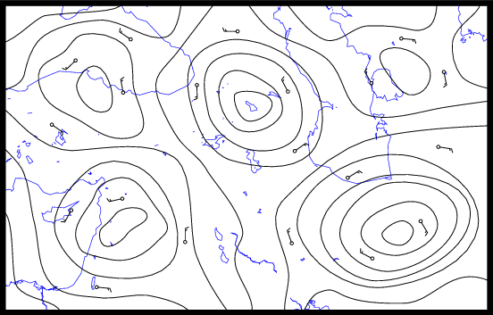
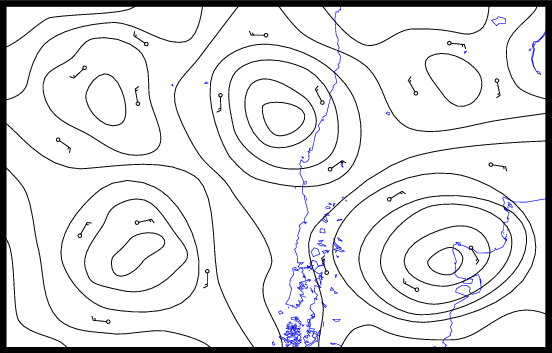
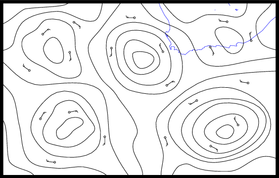
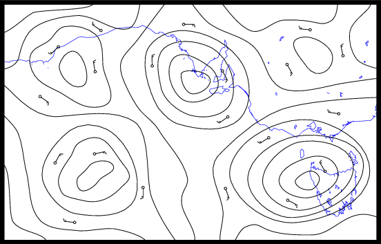

Upon unlocking this puzzle, solvers are presented with a message saying the pieces of the puzzle have been carried off by the wind. There are 6 clues pointing to where they might have ended up. Each one clues another puzzle in the Hunt that has almost certainly already been opened by the team, so solvers may recognize these from their descriptions. Upon revisiting the puzzle page for each of the 6 puzzles, solvers will find that a new section has appeared and attached itself to the bottom of the page. Each new section contains an image of a weather map.
Each map is zoomed in on an area bounded by 30 and 45 degrees N or S in latitude and consecutive multiples of 30 degrees in longitude. The maps show unlabeled isobars as well as selected points showing wind direction (cloud coverage and wind speed are kept constant, as they are irrelevant).
There are five clear pressure centers surrounded by at least one closed-loop isobar. Each center can be identified as a high-pressure center or a low-pressure center by looking at the direction of wind flow around it. In the northern hemisphere, wind flows clockwise around high-pressure centers and counterclockwise around low-pressure centers; in the southern hemisphere, wind flows counterclockwise around high-pressure centers and clockwise around low-pressure centers. This is due to the Coriolis effect. Wind also flows from high-pressure areas to low-pressure areas, but the directions shown are parallel to the surrounding isobars so this information is not available.
Each map can thus be transformed into a 5-bit integer. Treat each pressure center as a bit, with a high being 1 and a low being 0. The bits are ordered by the number of concentric closed-loop isobars surrounding each one, which ranges from 1 to 5. The integers can be mapped onto letters (A=00001, B=00010, etc.). Order the letters geographically and they spell out ENG in the northern hemisphere and ULF in the southern hemisphere, yielding the answer ENGULF.
| Clue | Host Puzzle | Image | Region | Pressure centers | Letter |
| One piece is fleeing from a bunch of villains wearing monster costumes. | Zoinks! (MIT) | 30–45 N, 120–90 W | LLHLH | E | |
| One piece is irresistibly attracted to a certain handsome towel-clad gentleman. | The Puzzle Your Puzzle Could Smell Like (Tea Party) |  | 30–45 N, 30–60 E | LHHHL | N |
| One piece is showing off after being folded into a beautiful flower. | Cross-Pollination (Mock Turtle) | 30–45 N, 90–120 E | LLHHH | G | |
| One piece is futilely trying to hide behind a stack of transparencies. | A Puzzle with the Answer WILLIAMS (White Queen) |  | 45–30 S, 90–60 W | HLHLH | U |
| One piece is having fun learning how to buzz buzz buzz buzz in harmony. | Bumblebee Tune-a (MIT) |  | 45–30 S, 0–30 E | LHHLL | L |
| One piece is simply mesmerized by the performance of a blue organist. | I Stumbled Across a Recording (MIT) |  | 45–30 S, 120–150 E | LLHHL | F |